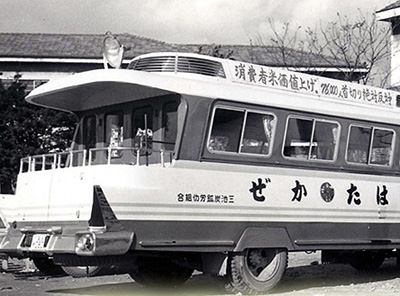
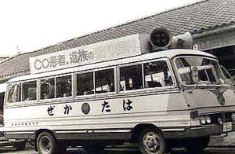
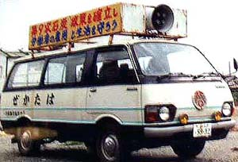
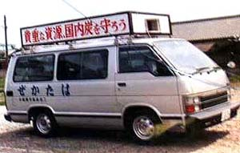
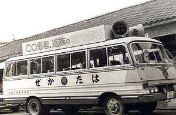
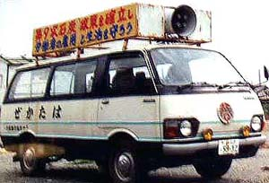
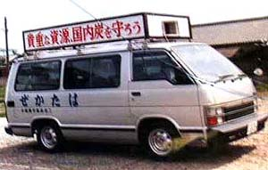
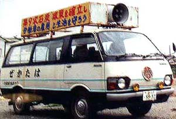
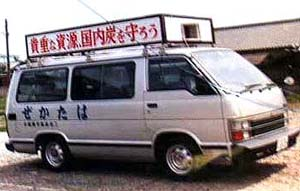
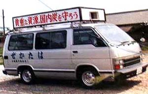

1960（昭和35）年 三井三池鉱業所三川鉱正門前 昭和26年12月購入。日産自動車横浜工場製作。80馬力、12人乗り、ＮＴ1951年型、幅員2Ｍ25、 グリーンと白銀のツートンカラー、日本ビクター放送設備付き、価格280万円。神奈川から三池まで1200キロ、三日二晩かか って輸送された。（昭和36年3月19日付け三池労組機関紙「みいけ」より）  1962（昭和37）年 笹林公園（山崎さん提供）  1970（昭和45）年頃  1991（平成3）年頃  1997（平成9）年頃
昭和26年12月購入。日産自動車横浜工場製作。80馬力、12人乗り、ＮＴ1951年型、幅員2Ｍ25、 グリーンと白銀のツートンカラー、日本ビクター放送設備付き、価格280万円。神奈川から三池まで1200キロ、三日二晩かか って輸送された。（昭和36年3月19日付け三池労組機関紙「みいけ」より）
1962（昭和37）年 笹林公園（山崎さん提供）  1970（昭和45）年頃  1991（平成3）年頃  1997（平成9）年頃
1970（昭和45）年頃  1991（平成3）年頃  1997（平成9）年頃
1991（平成3）年頃  1997（平成9）年頃
1997（平成9）年頃